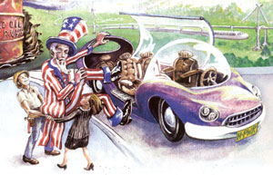

The monstrous acts of the Al Qaeda terrorists have caused thoughtful people to take another look at our dependence on Middle Eastern oil. Many are shocked to discover that, 28 years after the first Arab oil embargo, the United States still has not done anything serious about weaning itself from oil. In 1997, the world consumed 52 billion tons of coal, 26 billion barrels of oil and 82 trillion cubic feet of natural gas. If we include state-owned enterprises as well as multinational Goliaths, 20 giant companies marketed about half of all this fuel. When their common interests are threatened, these companies can coalesce into an essentially unstoppable, supranational force.
As Jay Leno said during Desert Storm, if Kuwait's major export had been broccoli, U.S. troops would never have left Fort Bragg. The U.S. government's love affair with Big Oil is reminiscent of Disraeli's classic line about Gladstone: "He had only one idea, and it was wrong." In the ordinary course of things, it is not possible to beat Big Oil on any issue of core concern to it. This, by itself, is a sufficient reason to demand campaign finance reform. But, during certain extraor dinary moments, when gushers of democratic populism pour forth, windows of opportunity exist. As with the bombing of Pearl Harbor and the launching of Sputnik, epochal events can briefly change all the rules of the political game.
The attack on the World Trade Center has put us at a political crossroads. After that terrible day, we have every reason to cure ourselves of the oil habit. It's not just the new urgency for U.S. energy independence (which, by the way, we will never achieve through drilling; how can we, with only 3 percent of the world's estimated oil reserves?). Nor is it just the old urgency for curbing global warming, vital as that is.
The global oil trade also provides some of the most attractive targets for terrorism. By sinking two or three tankers, terrorists could completely shut down the flow of oil (18 million barrels a day) through the Straits of Hormuz-perhaps triggering a global depression. Or, with a few small, well-placed bombs, they could congeal all the oil in the whole length of the Alaskan pipeline. Such an act would not produce a depression, but it would create the world's first 800-mile-long Chap Stick. This possibility is one refutation of the illogic that considers oil from the Arctic National Wildlife Refuge to be a hedge against terrorism.
Coming at a moment when strong federal action is needed to stimulate a flagging U.S. economy, the surge in global terrorism could provide the impetus needed for this country to get serious about moving away from oil. Obviously, we should enact the whole environmental energy agenda: tougher building codes, tougher lighting- and appliance-efficiency standards and so forth. But if this is truly a watershed on the order of Pearl Harbor, let's think outside the box.
First, let's mandate a radical redesign of that core user of oil, the automobile. Americans drove 60 percent more total miles in their automobiles last year than the Germans, French, British, Japanese, Canadians, Mexicans and Swedes combined.
The size of the average new vehicle in the U.S. fleet makes the gulf between Americans and everyone else even greater. That is why Americans, with less than 5 percent of the world's population, consume 43 percent of the world's gasoline.
In World War II, we stopped producing cars in order to convert Detroit's assembly lines to jeeps and tanks. That's what "serious" means during a time of war. For this war, let's keep Detroit's assembly lines rolling. But-remembering the Victory Gardens families were asked to plant during World War II-let's build Victory Cars: All new cars, all new sport utility vehicles and all other personal vehicles would have to get at least 50 miles per gallon by 2007. By 2008, all new cars would use either hybrid engines or fuel cells.
Here's another critical transportation step: high-speed rail. Congress's recent airline bailout was equal to Arntrak's budget for 30 years! This is crazy. We already build airports with tax-exempt bonds, we develop virtually all new aircraft using Department of Defense research and development resources, and we subsidize air traffic control.
Last year, the federal government spent $33 billion on highways and $12 billion on aviation, but only a half billion on Amtrak. That's 70 times as much money on highways as on railroads. And at the state, county and local levels, which contribute 75 percent of all highway money, the ratios are even worse.
The time is long overdue to develop dedicated high speed rail corridors between all major cities 500 miles apart or less. A 200-mph train could travel from downtown New York to downtown Washington in less than an hour and a half. Airports now require longer than that just to clear security. Superb, popular, high-speed rail systems have been operating for the last two decades in Japan, Germany, France and Italy.
Third, there's the sun. We can reduce the cost of solar cells dramatically with huge, structured federal purchases. There's a precedent: The Department of Defense did it for computer chips. In 1961, Texas Instruments began producing integrated circuits for small, specialized applications. They cost $100 and replaced a couple of dollars' worth of conventional electronics. Although there was no meaningful market for them outside the very narrowest of niches, and other companies sneered at them, the Department of Defense started burying these small, lightweight, low-power devices in bulk.
In a few years, the price plummented-from $100 in 1961 to $2.33 in 1968. As the price dropped, the market got interested. Soon private purchases were dwarfing government purchases. We now have chips that cram vastly more processing power in little laptops than was available-total-to NASA at the time of the first moon shot.
If the federal government hadn't thrown its buying power behind those early chips, the information revolution never would have been born. Today, by buying huge numbers of photovoltaic cells, the federal government could launch a global energy revolution. Bulk purchases of up to $10 billion during the next four years would drive the learning curve up and the costs down, until the price hits levels at which the global market will take control.
Wind already is making economic sense in the windiest areas. The problem is that those regions generally don't share transmission grids with the most-populated areas. But there is a long tradition of government providing this sort of infrastructure. Consider the Bonneville Power Administration, the Tennessee Valley Authority and the Western Area Power Administration. We should immediately begin building transmission facilities linking our major wind regions to our major population centers.
And, finally, we need hydrogen. During the last couple of decades, a near-consensus has emerged that the best way to store surplus energy for use when the wind isn't blowing and the sun isn't shining is to generate hydrogen. Later, the hydrogen can power extremely efficient fuel cells to generate electricity, heat and water.
All the basic elements of a hydrogen economy now exist. We know how to build the infrastructure-in particular, the pipelines and storage areas-For the coming hydrogen age. An informed public should demand that its government start constructing these elements, even as it commissions fuel cells for thousands of government buildings in 2003, contracts for fleets of fuel-cell vehicles in 2004 and continues to research advanced technologies (such as photoelectrochemistry) to produce hydrogen super-efficiently.
These five steps are bold. Cynics might say all five fall at that point on the political compass where the public welfare intersects with fat chance. In ordinary times, we would agree. But a total national mobilization that was inconceivable before Pearl Harbor was unstoppable afterward. A moon shot that was unthinkable before Sputnik was in evitable afterward. In times of crisis, the United states makes its greatest strides. This is such a time.
Denis Hayes was National Coordinator of the first Earth Day, a former director of the National Renewable Energy Lab and is the current president of the Bullitt Foundation, an organization working on behalf of the environment in the Pacific Northwest. Lisa A. Hayes is a Seattle attorney.
|
 Illustration by Dave Channon |
|
|